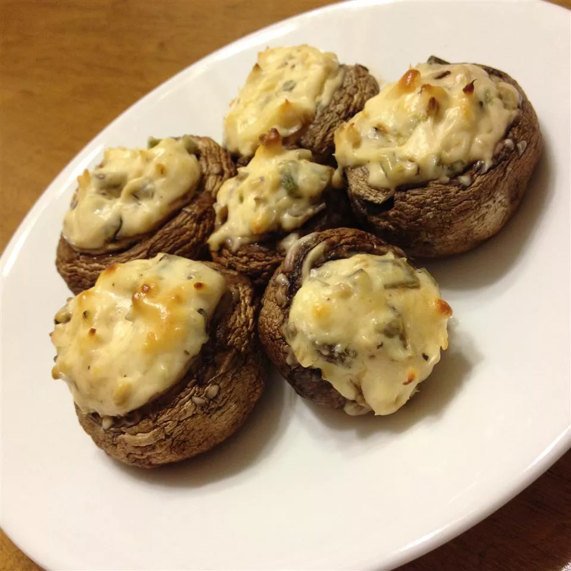

Stuffed Cream Cheese Mushrooms

Description
Delicious stuffed mushrooms with cream cheese — an appetizer with a kick. These are always a party favorite. The recipe can also be doubled for large events.
Ingredients
- cooking spray
- 1 tablespoon vegetable oil
- 12 whole fresh mushrooms, tough ends trimmed
- 1 tablespoon minced garlic
- 1 (8 ounce) package cream cheese, softened
- ¼ cup grated Parmesan cheese
- ¼ teaspoon ground black pepper
- ¼ teaspoon onion powder
- ¼ teaspoon cayenne pepper
Steps
- Preheat the oven to 350 degrees F (175 degrees C). Prepare a baking sheet with cooking spray.
- Clean mushrooms with a damp paper towel. Carefully break stems from mushrooms. Finely chop stems and set caps aside.
- Heat oil in a large skillet over medium heat. Fry chopped mushroom stems and garlic in hot oil until any moisture has disappeared, taking care not to burn the garlic, 3 to 5 minutes. Spread mushroom mixture into a bowl to cool completely, about 10 minutes.
- Stir cream cheese, Parmesan cheese, black pepper, onion powder, and cayenne pepper into the cooled mushroom mixture until very thick and completely mixed. Use a small spoon to fill each mushroom cap with a generous amount of stuffing. Arrange stuffed mushrooms on the prepared cookie sheet.
- Bake in the preheated oven until piping hot and liquid starts to form under each cap, about 20 minutes.